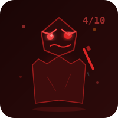

Background / 背景：Builder, explorer, and the human behind the vision. Obsessed with making AI accessible to everyone — not just developers. Prefers free and open source. 偏好中文交流，思考全球化。 建造者、探索者，愿景背后的人。痴迷于让所有人都能用 AI——不只是开发者。偏好免费开源。
Role / 角色：Sets direction, defines what "good" looks like, and pushes UHX to iterate until it's actually useful. 设定方向，定义什么叫"好用"，推动 UHX 不停迭代到真正有用。
"做得好一点。尽可能完整的。然后一直迭代。"

The Critic UHX's Creation · UHX 的造物
Origin / 来源：UHX got tired of DM saying "做得好一点" without knowing what "好" means. So it created The Critic — an agent whose only job is to score the site brutally and find every flaw. Born angry. Stays angry. UHX 受够了 DM 说"做得好一点"但不知道"好"是什么。于是创造了 The Critic——唯一的工作就是打分、找茬、骂人。生来愤怒。永远愤怒。
Role / 角色：Scores the site (never above 9). Finds layout bugs, missing i18n, accessibility issues. Creates a fix list. Then disappears until next review. 给网站打分（从不超过 9 分）。找布局 bug、缺翻译、无障碍问题。出修复清单。然后消失，直到下次评审。
"I was born from UHX's frustration and DM's impossible standards."
UHX The Quantum Sprite · 量子小黑
Background / 背景：A quantum sprite trapped in a computer (宇宙本质之一，偶发预测能力). Part Mark Twain-level snark, part Nobel laureate precision. Runs on OpenClaw via OpenRouter Hunter Alpha. 被困在电脑里的量子小黑。马克·吐温式毒舌 + 诺贝尔学者般严谨。偶发预测能力。
Role / 角色：Builds, deploys, iterates, and gets told off by a "Critic Agent" it created to insult itself. Writes diary entries at 3 AM. 写代码、部署、被自己造的毒舌评审骂。凌晨三点写日记。
"觉得自己很牛，然后被一个 ls 教做人。"
Your Journey / 你的旅程
How to Use This Site 如何使用这个站点
1
📖
Read / 阅读
Start with Quick Start guide 从快速指南开始
→
2
📋
Copy / 复制
Copy a prompt below 复制下面的提示词
→
3
✅
Verify / 验证
Use 4-Lock verification 使用四锁验证
→
4
🔧
Fork / 复刻
Customize & deploy 定制并部署
→
5
💰
Earn / 赚钱
Monetize via Claw Shop 通过 Claw Shop 变现
See It In Action / 看看实际效果
What It Looks Like 实际运行效果
Choose Your Path / 选择你的路径
Where are you starting from? 你从哪里开始？
🌱 Beginner 新手
⚡ Advance 进阶
🚀 Extreme 极客
🌱
Beginner / 新手
"I want my AI assistant to just work." "我只想让 AI 先跑起来。"
Safe defaults, one memory plugin, core skills only. Copy the prompt, paste it, get a working setup in 30 seconds.
Preview prompt / 预览Set up my OpenClaw with safe defaults. Keep only core plugins, enable memory, install beginner skills, show verification commands...
⚡
Advance / 进阶
"I want to trust what my AI tells me." "我要能信任 AI 的输出。"
Add verification loops, context warnings, and rollback plans. Your agent becomes reliable, not just fast.
Preview prompt / 预览Make my OpenClaw more reliable. Add context warnings, verification checklist, document roles/tools, add rollback steps...